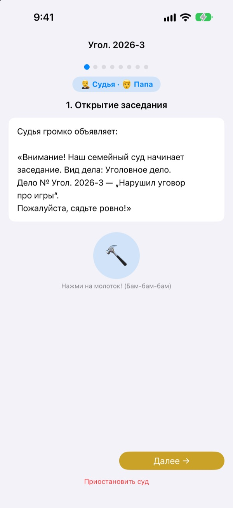
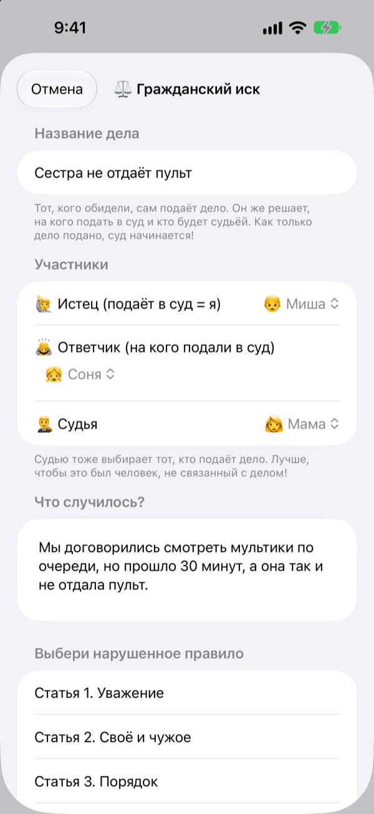
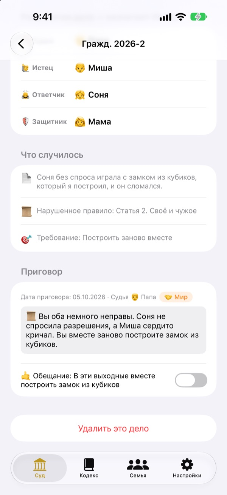
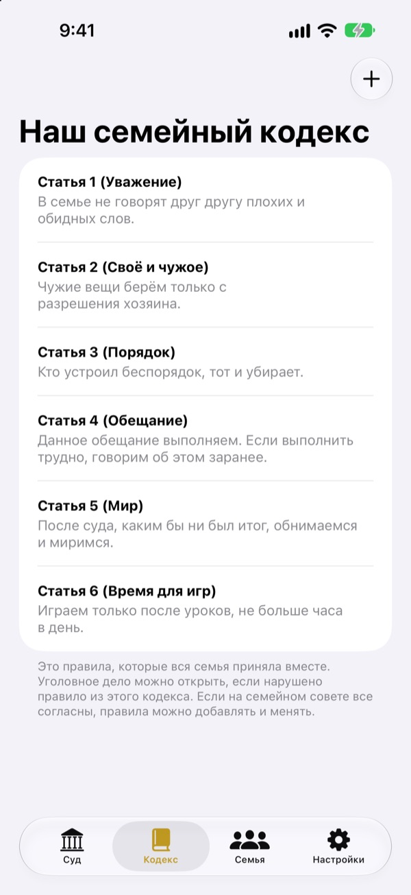

Обидно?
Не плачь, иди в суд.
Ребёнок сам подаёт иск как истец, а семья делит роли судьи и адвоката. На каждом шаге сценарий подсказывает, чья очередь и что говорить, так что даже первый процесс идёт как настоящий.
Без рекламы, покупок и регистрации. Записи остаются только на этом устройстве.

Проведите заседание
Короткое дело: «Брат не отдаёт мне пульт». Переключите сложность слов сверху, ударьте молотком и запустите таймер. Будет звук, проверьте громкость.
«Он первый начал!» Устали всё время быть судьёй?
Когда начинается ссора, решение почти всегда выносит взрослый. Проигравший плачет от обиды, а победивший толком не понимает, почему выиграл. Семейный суд даёт детям порядок: рассказать свою сторону до конца и выслушать другую тоже до конца. А решение заканчивается обещанием, а не только наказанием.
Обиженный сам подаёт иск
Тот, кому кажется, что с ним поступили несправедливо, становится истцом и подаёт иск. На кого подать и кто будет судьёй, решает истец. Дети могут подать иск даже на маму с папой.
Видели, как кто-то нарушил домашний закон? Станьте прокурором и возбудите уголовное дело. Судьёй может быть только тот, кто не истец и не ответчик.

Решение заканчивается обещанием
Вместе с решением назначается обещание или наказание, и его отмечают, когда оно выполнено. Завершённые дела становятся вашими прецедентами.
Идеи наказаний начинаются с того, чтобы всё исправить и загладить обиду, это скорее примирение, чем кара. Урезать игры и телевизор стоит в последнюю очередь.

Ваш дом, ваши законы
Запишите правила, о которых договорилась семья, например уважение, порядок и верность слову, в виде статей и дополняйте или меняйте их когда угодно. В иске указывают нарушенный закон.
Раздел «Узнать о суде» объясняет, чем заняты судья, истец, прокурор и адвокат и как идёт процесс.

Начать можно в три шага
- 1
Добавьте семью
Хватит имени и эмодзи. Аккаунт не нужен.
- 2
Подайте дело
Если обидно, это гражданское дело, если нарушен домашний закон, то уголовное. Потом выберите судью.
- 3
Откройте заседание
Следуйте сценарию, держите время по таймеру и оглашайте решение ударом молотка.
Слова, которые растут вместе с ребёнком
- Судья
- Простой: Рефери · Судебный: Председательствующий
- Истец
- Простой: Обиженный · Судебный: Истец
- Ответчик
- Простой: Отвечающий · Судебный: Ответчик
- Прокурор
- Простой: Свидетель · Судебный: Прокурор
- Подсудимый
- Простой: Отвечающий · Судебный: Подсудимый
- Защитник
- Простой: Помощник · Судебный: Защитник
- Гражданское дело
- Простой: Обидно! · Судебный: Гражданское дело
- Уголовное дело
- Простой: Нарушено обещание · Судебный: Уголовное дело
Выберите сложность слов в настройках, и слова на экране и в сценарии поменяются разом. Для дошкольников подойдёт «Простой», для школьников «Обычный».
Частые вопросы
С какого возраста?
Любой ребёнок, который умеет читать, может играть вместе с родителем. Со сценарием, подсказками и уровнем «Простой» участвовать смогут и малыши, если взрослый читает вслух.
Это правда бесплатно?
Да. Никакой рекламы и покупок, открывающих функции. В настройках есть добровольные чаевые разработчику, но они ничего не открывают и не закрывают.
Нужен ли интернет?
Нет. Заседания и записи работают полностью офлайн. Интернет и вход в iCloud нужны только для отправки отзыва из настроек.
Где хранятся записи?
Семья, законы, заседания и решения хранятся только на устройстве и не отправляются ни на какой сервер. Разработчику приходят лишь отзывы, которые вы отправляете сами, и анонимная статистика использования, по которой вас не узнать.
Можно сделать копию или перенести на другое устройство?
Через «Сохранить записи» в настройках выгрузите всё в файл, а через «Загрузить записи» на другом устройстве всё вернётся как было. Копии из старой веб-версии тоже загружаются.
Работает ли на iPad?
Да, на iPhone и на iPad. Большой экран удобен, когда вся семья собирается вокруг.
А если наказания станут слишком строгими?
Когда прокурор просит наказание, сценарий напоминает: не слишком тяжёлое и выполнимое. Идеи наказаний начинаются с примирения: исправить, загладить обиду, посмотреть глазами другого.
Как удалить всё?
Если удалить приложение, исчезнут все записи на устройстве. Ничего никогда не покидало его, поэтому нигде больше ничего не остаётся. Чтобы удалить отправленный отзыв, напишите нам.
Ошибки, идеи или что-то ещё? Пишите на leeo@kakao.com. Отзыв можно отправить и из настроек приложения.